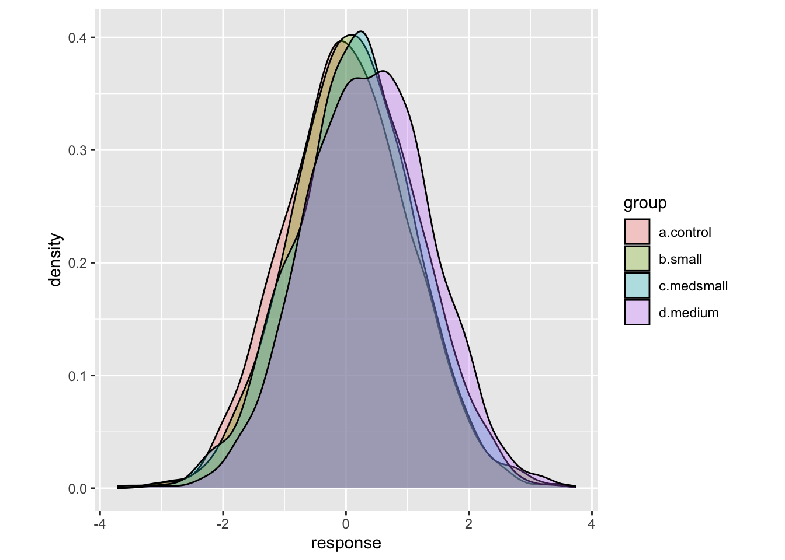
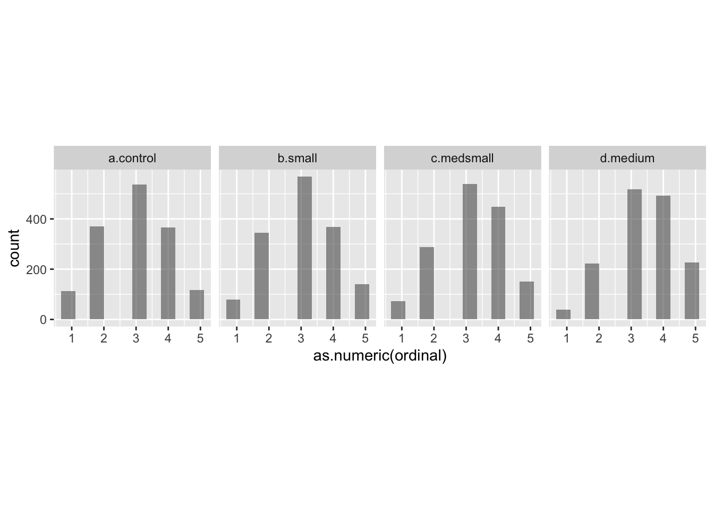

Power analysis workflow (Jamie Elsey)
13.1 Discussion and framework
13.1.1 Introduction and goals
The purpose of this document is to propose the fundamentals for a workflow for power analyses.
Although this started from a Bayesian paradigm, the overarching framework is applicable to any analytic approach, and I will begin with a standard frequentist analysis.8
The general approach laid out here can be the basis for developing and build a library of common analyses and inference goals. (DR: we might want to incorporate declaredesign for this.) Helpful future additions to the toolkit would include
clear and flexible ways to generate hypothetical data sets, and
adding further analytic designs.
This is not intended as an exhaustive introduction to the fundamentals of statistical power - I assume you are reasonably well-versed in some general principles of statistical inference and hypothesis testing, as well as in the basic idea of what power analysis is. (DR: We can cover this in the earlier section, or link relevant expanations).
We will focus solely on ‘simulation-based’ power analysis, and not on ways of mathematically (analytically) deriving power.
13.1.2 Definition of power
In frequentist null hypothesis significance testing (NHST), power is typically defined as the probability that we can reject the null hypothesis, if the alternative hypothesis is indeed true (i.e., power is the ‘true positive rate’).9
For Bayesian analyses, there is some esoteric discussion about ‘whether power is even a thing we should be discussing.’ There is uncertainty about the data-generating process, but there is only one data set.10
Before we conduct an experiment (or run a survey, or collect data for an analysis), there are many hypothetical future data sets we might observe. Whether we favor a frequentist or Bayesian approach, it seems reasonable to ask: ‘Given the range of data that I might observe, how likely is it that I can make certain conclusions?’. The conclusion or inference one wishes to make from a data set can go far beyond simply saying something like “there is a non-zero difference between groups”** (although this is probably the most common inference people first consider).11
We can broaden the idea of power to indicate the probability that our proposed sample yields information that allows us to make some specific kind of inference about the data-generating process.
These inferences can take many forms, such as:12
- the probability of determining that there is a non-zero difference between two conditions,
- the probability of detecting an effect in a regression model of a specific magnitude (or greater),
- the probability of detecting some ‘smallest effect size of interest,’
- the probability of a ‘false positive,’ i.e., the probability of concluding that there is a difference between groups when in fact there is no difference, (DR: I didn’t think this would ever be called ‘power’ .. I thought this would be called the ‘size’ of the test), or
- the probability of achieving a desired level of precision around a particular parameter estimate.
Hence, a power analysis helps frame our prospective research project in relation to the goals we would like to achieve (DR: cf the ‘diagnosands’ of the declaredesign framework). It provides us us with an estimate (and it is indeed an estimate, not a certainty!) of the probability that we will be able to make the inference we wish to make, given various factors both inside and outside of our control. (See discussion in fold.)
What is ‘in our control?’ We might think of sample size as in our control, which it generally is, but this is typically limited by practical considerations outside of our control (such as the availability of a sample or financial constraints). Conversely, effect size is often considered out of our contro;; however we can sometimes increase the ‘dosage’ we give, or try to select a particular group of participants who might be particularly susceptible to our effect of interest.
13.1.3 General workflow for simulation-based power analysis
Simulation-based power analysis proceeds in four primary steps:
- Generate a large number of ‘simulated data sets’ for the analysis.13
The data sets generated should be specific to the goal of the study. E.g., suppose we want to know the ‘power (of a particular design and testing procedure) to detect an effect size of 0.2 SD.’ Here we should generate data that reflects this effect size (for considering the true positive and false negative rates). If we also want to measure the rate of type-2 error, the rate of false positives (if the null, e.g., an effect side of 0, holds), we should also generate data reflecting this ‘null effect.’
Run the proposed analysis over the many simulated data sets (as efficiently as possible, as this can take a long time). This analysis should either return the estimand of interest, or ensure that we can easily compute it (in Step 3). The output should be kept as flexible as possible (while conserving computer memory). This will allow us to assess multiple inference goals on the same output.14
Summarize the output returned in Step 2, computing the share of simulated data sets that meet different decision criteria or inference goals. (Example described in fold)
E.g., we might simulate 1000 data sets based on an effect size of 0.3 standard deviations and perform a standard t-test of the difference between treatment and control for each of these. We might then find that for 743 of 1000 of these simulated data, the test ‘rejected the null hypothesis,’ suggesting a power of 74.3%.
(Feel free to add other examples here.)
This can show the likelihood of achieving a range of goals given various sample sizes and design and testing choices, including the rates of misleading conclusions. In frequentist analyses, it is possible that steps 2 and 3 occur together (e.g., the p-value is returned along with the other output). In my experience with typical Bayesian designs, these stages are best kept separate so that we can first do the more time-consuming Step 2, and then more freely explore the various options in Step 3.
- Assess the output and determine whether the proposed analyses and inference goals are realistic and likely to yield informative results. If not, one may need to think of alternative design or data-collection choices (including sample sizes, treatments, and treatment assignments) or inference goals, and return to Step 1.15
In the sections that follow, I will present some generally useful packages and functions for power analyses, including annotated code examples with particularly useful aspects highlighted. I will do this in the context of a frequentist power analysis for between-groups (=between-subject?) analysis.16
13.1.4 Possible pitfalls/misunderstandings of power analysis
It is important to note that power analyses are not an ‘omniscient oracle.’ They might better be termed ‘power projections’ or ‘power estimates.’ Even if we estimate that we have 99.9% power for detecting some a particular effect, we may have specified our simulations in an unrealistic way. When we actually run an experiment, we might see (e.g.) far more underlying variation or measurement error than we predicted, leading our analyses to be fairly uninformative. Conversely, we might be overly conservative with our power analysis; perhaps a design we thought was ‘underpowered’ actually has a high probability of producing very compelling results.17
I raise this only to point out that our power analyses might not always be perfect or be something of a blunt instrument. We should recognise they are not guarantees but more a way of determining the basic plausibility of achieving certain goals. Some other things to consider in a similar vein are presented below, and again the intention here is merely to frame our use of power analyses and recognise what sort of things I suspect they can or can’t help us with:
When we see real data and real interesting patterns emerge, we are likely to go further in modeling and investigating these patterns than some of the more simple analyses and comparisons we conduct in the initial power analysis. I suspect power analyses are not so good for determining all the intricate, in-depth things we might plumb in a dataset. They are probably better at assessing the tractability of a broad inference goal.
We might want to give some consideration to how far we wish to go in the initial data simulation step to think about all sorts of hypothetical data sets. As models become more complex, the number of different parameters that might vary - with possible effects on power - starts to balloon. E.g., even in a simple repeated-measures example, do we wish to vary not only the effect size but all sorts of different correlations from pre- to post-treatment within subjects? If we are simulating ordinal data, then power might change depending on how we initially suggest binning the outcomes, but there are infinitely many ways we might think the data might look… Discussion and consideration of how far we should go with these things is welcome and could be useful! (DR: I’m not sure what you are getting at here. Are you saying that ‘the space of designs and proposed analyses we can explore is extremely large, and we may need to make some ad-hoc choices to avoid this getting unmanageable?’)
13.2 Concrete implementation of framework
13.2.1 Step 1: Generate a large number of data sets for the analysis
Confirm that we can generate the basic data we want
Because ultimately we might be generating some rather large data files, we increase the memory limit alotted to R first. I don’t believe there is any real cost to increasing this memory limit, so it is wise to do so as to avoid a function iterating many times over for a long time, but ending up without sufficient space to store the outcome:
memory.limit(100000)
## [1] InfNow we want to generate a hypothetical data set. In this case, we will be comparing 4 groups, each shown a different message in a between-subjects design (3 active vs. a control condition with a neutral message). Willem has some nice procedures for generating repeated-measures data in his walkthrough (https://www.willemsleegers.com/posts/simulation-based-power-analyses/) using the library MASS. I think there are likely to be other useful packages or techniques for generating simulated data for more complex designs or patterns of results that we could look into. Being better able to generate valid and informative data sets is probably one of the things that would improve our capacity for running informative power analyses the most.
In this example, we will take advantage of the different groups to assess several different possible effect sizes. In a multiple regression, we would then be able to assess whether these different effect sizes come out as significantly different from our control group, and therefore our power to detect different sizes of effects.
# tidyverse simply used for data wrangling and plotting library(tidyverse)
four.group.datamaker <- function(sim = 1, a = 0, b = .1, c = .2, d = .4, pop=1500) { # first a tibble (data frame) with 1500 ppts, with the different groups showing # effect sizes in Cohen's d of .1, .2, and .4 four.groups <- tibble(a.control = rnorm(pop, a, 1), b.small = rnorm(pop, b, 1), c.medsmall = rnorm(pop, c, 1), d.medium = rnorm(pop, d, 1), sample.size = 1:pop) %>% # turn the data into long form pivot_longer(cols = 'a.control':'d.medium', names_to = 'group', values_to = 'response') %>% # put cutpoints in the data to make it more similar to the ordinal responses we would get mutate(ordinal = case_when(response < -1.5 ~ 1, response < -.5 ~ 2, response < .5 ~ 3, response < 1.5 ~ 4, response >= 1.5 ~ 5), # for the purposes of this demo we will not analyse it as ordinal as it takes longer # to run the regressions, but if you did so you would also want to make the response # a factor ordinal = as.factor(ordinal), sim = sim) return(four.groups) } # test that the function works to make one data set before making many! test.data <- four.group.datamaker() ggplot(data = test.data) + geom_density(aes(x = response, fill = group), alpha = .3) + theme( aspect.ratio = .5 )

ggplot(data = test.data) + geom_histogram(aes(x = as.numeric(ordinal)), alpha = .6, position = position_dodge(), bins = 10) + facet_wrap(~group, nrow=1) + theme( aspect.ratio = 1 )

We can see from the plots that the function appears to be working. When developing a data set for the first time, one would usually go further with some ‘diagnostic’ checks to confirm that the data is behaving as you intended. For example, in Willem’s examples, he used the mvnorm function with ‘empirical = TRUE,’ so that the exact mean diffreences you specified are present in the data. This can then be confirmed wiht descriptive statistics. There might be all sorts of other diagnostics or plots we might check with other types of data that we generate.
Efficiently generate many data sets
Now we just need to run the function above many times over. This could be done using loops, but a very useful set of R functions in the tidyverse is the purrr package of map functions. Even better, a package called furrr is available to run such map functions in parallel to further reduce time. This doesn’t matter so much here because this will be quite quick anyway, but is important when we run the analyses over the many data sets. For furrr to do this, we need to tell it to plan for ‘multisession,’ and give it a seed number:
p_load(furrr) library(furrr) plan(multisession) options <- furrr_options(seed = 48238)
# we will pass N = 500 simulations to the map function nsims <- 1:500 # the map function will run our data-making function over 1000 simulations sim.data <- future_map_dfr(.x = nsims, .f = four.group.datamaker, a = 0, b = .1, c = .2, d = .4, .options = options) # split the simulated data into the separate simulations sim.data <- sim.data %>% group_by(sim) %>% group_split()
Now, we have 500 simulated data sets representing our hypothetical outcome data, and can perform analyses on them:
head(sim.data[[3]])
## # A tibble: 6 × 5
## sample.size group response ordinal sim
## <int> <chr> <dbl> <fct> <int>
## 1 1 a.control -0.395 3 3
## 2 1 b.small -0.396 3 3
## 3 1 c.medsmall -0.0762 3 3
## 4 1 d.medium 0.994 4 3
## 5 2 a.control -0.931 2 3
## 6 2 b.small -1.58 1 313.2.2 Step 2: Run the proposed analysis over the many data sets and return the estimands of interest
Before we run an analysis over the many data sets, we need to check that our models will return the estimands that we wish to make inferences from. For a Bayesian analysis, this step might involve dropping parts of the posterior that are not relevant (e.g., estimates of every participant intercept, which take too much space for what they are worth) and ensuring we get the parts we care about (e.g., we might insert some additional code to retrieve a posterior distribution for Cohen’s d, or simply the parameter estimate for the interaction). For Bayesian analyses I err on the side of getting as many of the main parameters as possible, because this is a very time consuming step.
For frequentist analyses, there are also a range of estimands we might care about. For example, we might consider returning a p-value, or the upper and lower bounds for confidence intervals, r-squared estimates etc. Again, this depends on the goals one wishes to achieve and what one wants to make inferences about.
The key point for any kind of analysis here is that you don’t want to forget an estimand that might be of interest and then have to re-run the entire analysis. In addition, you want to have the regression run on different sample sizes of the data, so that you can generate a power curve plot for the analysis, showing how your power changes according to increasing the sample size.
In the example function below, we run a simple linear regression, predicting the response from group.
linear.reg.maker <- function(data, breaks) { # this function cuts the data set it is given into different sample sizes cut.samples <- function(break.point, data) { cut.data <- filter(data, sample.size <= break.point) %>% mutate(sample.size = break.point) return(cut.data) } data.cuts <- map_dfr(.x = breaks, .f = cut.samples, data = data) # the data is split according to the sample size # to feed to the regression model data.cuts <- data.cuts %>% group_by(sample.size) %>% group_split() # this function runs the regression run.reg <- function(data) { four.group.form <- as.numeric(ordinal) ~ 1 + group four.group.reg <- lm(formula = four.group.form, data = data) # we extract confidence intervals for the parameters of interest ci99 <- confint(four.group.reg, level = .99) ci95 <- confint(four.group.reg, level = .95) # we create an output to show the confidence intervals around the effects # and some additional inference info, e.g., 'nonzero' indicates whether # the lower bound of the CI excludes 0 or not. # 'width' indicates the width of the confidence interval, # for assessment of precision output <- tibble(group = c('small', 'medsmall', 'medium', 'small', 'medsmall', 'medium'), interval = c(.99, .99, .99, .95, .95, .95), lower = c(ci99[[2,1]], ci99[[3,1]], ci99[[4,1]], ci95[[2,1]], ci95[[3,1]], ci95[[4,1]]), upper = c(ci99[[2,2]], ci99[[3,2]], ci99[[4,2]], ci95[[2,2]], ci95[[3,2]], ci95[[4,2]])) %>% mutate('nonzero' = case_when(lower > 0 ~ 1, TRUE ~ 0), 'width' = abs(upper - lower), 'sim' = data[[1, 'sim']], 'cell.size' = nrow(data)/4) return(output) } # run the regression function over the different sample sizes output <- map_df(.x = data.cuts, .f = run.reg) return(output) }
Once we have made and tested that our function works as intended and returns the values we want to make inferences from, we can run it over the many simluated data sets:
t1 <- Sys.time() linreg.output <- future_map_dfr(.x = sim.data, .f = linear.reg.maker, breaks = seq(from = 150, to = 1500, by = 150)) t2 <- Sys.time() t2 - t1
## Time difference of 11.71549 secsThe object ‘linreg.output’ is now a large dataframe, cataloguing whether or not certain inference thresholds were reached across the many simulations. In the third primary step, we can summarise and graphically display this information.
13.2.3 Step 3: Summarise the output returned in Step 2 to determine likelihood of achieving various inferential goals
Now, we wish to ascertain how likely we are to achieve a range of inferential goals, depending on factors such as the sample size, the underlying effect sizes, or whatever else we varied in simulating our data and running our models. For this example, this is as simple as generating a summary of the output from Step 2:
# group the data according to group, confidence interval, and size per group four.group.lin.summary <- linreg.output %>% group_by(group, interval, cell.size) %>% # summarise the amount of times we get a CI greater than 0 summarise(.groups = 'keep', 'ci above 0 vs. control' = sum(nonzero)/5) %>% # change some factors for plotting mutate(interval = factor(interval, levels = c('0.95', '0.99'), labels = c('95% CI', '99% CI')), 'Effect size' = factor(group, levels = c('small', 'medsmall', 'medium'), labels = c('Very small (.1)', 'Small (.2)', 'Medium (.4)')))
And then plotting the resulting power curve:
ggplot(data = four.group.lin.summary) + scale_x_continuous(limits = c(100, 1550), breaks = seq(from = 150, to = 1500, by = 150)) + scale_y_continuous(limits = c(0, 100), breaks = seq(from = 0, to = 100, by = 20)) + geom_hline(aes(yintercept = 80), linetype = 'dashed', size = .33, alpha = .25) + geom_hline(aes(yintercept = 90), linetype = 'dashed', size = .33, alpha = .25) + geom_path(aes(x = cell.size, y = `ci above 0 vs. control`, color = `Effect size`, group = `Effect size`), size = .66) + geom_point(aes(x = cell.size, y = `ci above 0 vs. control`, color = `Effect size`), size = 1.5) + labs(y = 'Power to detect a non-zero effect', x = 'Number of participants per condition (control group not included)') + scale_color_manual(values = c('#c10d0d', '#7dc3c2', '#dcc55b')) + facet_wrap(~interval) + theme( aspect.ratio = 1, panel.grid.major = element_line(colour = "white", size = 0.33), panel.grid.minor = element_line(colour = "white", size = 0.2), panel.background = element_rect(fill = "grey96"), axis.line = element_line(color = 'black', size = 0.375), axis.ticks = element_line(color = 'black', size = 0.5), text = element_text(color = 'black', family = 'Gill Sans MT', size = 9), axis.text = element_text(color = 'black', family = 'Gill Sans MT', size = 7), strip.background = element_blank() )

13.2.4 Step 4. Assess the output and determine whether the proposed analyses and inference goals are realistic and likely to yield informative results.
In Step 4, we use the information we have generated above to make substantive conclusions about the projected power of our experiment to detect certain effects, given certain underlying parameters. From this we can make recommendations as to experimental design.
Based on the power curve plotted above, we can conclude that we would have a very high likelihood of detecting effects of .4 vs. a control group at even quite low sample sizes, and also a good possibility of detecting effect sizes of .2 at quite modest sample sizes. On the other hand, for the very small effect size, we would not be confident in detecting such a difference vs. a control group even at 1500 participants per group. If effect sizes of this size we what was expected in such an experiment, and it was crucial that they were detected if present, then we might consider going back to Step 1 and reconsidering our experimental design to include even more participants.
This will make the code easier to run as well. Note that as Bayesian power analyses can be very time consuming (at the moment/with our current setup), in some cases even if you ultimately might perform a Bayesian analysis, it may make some sense to run frequentist approaches first. In many cases the estimates from Bayesian and frequentist approaches will tend to converge. I (Jamie) suspect general estimates from frequentist approaches would be quite similar to those of Bayesian approaches, if the goal of the analysis (what you want to make an inference about) is the same. I will make an accompanying document with an example of a Bayesian power analysis that should be computationally feasible to accompany this.↩︎
More precisely, we may express this as ‘power against a particular alternative hypothesis.’ (DR: may be worth putting maths here at some point, and also give a canonical reference.)↩︎
Maybe add ‘and there is no standard ’null hypothesis testing procedure.’ Actually, maybe this point needs a bit more fleshing out? What is the implication of ‘there is only one data set?’↩︎
Or a comparable statement posed in probablistic terms… Frequentist: ‘if there had been a zero difference between these groups (H0), this data is unlikely to have been generated.’ Bayesian: ‘the posterior distribution puts most of the probability mass on there being a difference between groups greater than (some moderate amount).’↩︎
DR: Which of these do you consider frequentist and which are Bayesian, and which can be either?↩︎
These may be generated by draws based on a canonical distribution, like the Gaussian (‘normal’) with particular parameters. Alternately, if prior ‘similar’ data is available (e.g., from outcomes in the year prior to a field experiment), we may prefer to generate it by resampling from this.↩︎
E.g., in a Bayesian analysis, we can get the full posterior distribution for an analysis so it can be assessed and summarised in many ways in step 3.↩︎
DR: I removed ‘ways of generating data’ because I thought it could be misleading. It seems wrong to first say, e.g., ‘we assumed the a standard normal distribution of outcomes with a standard deviation equal to that observed in prior trials’… and then say ‘but that didn’t have enough power so lets assume a more concentrated distribution.’ What I think you meant was consider other ways of actually collecting data or setting up the experiment that would lead to a reasonable expectation of a different data generating process, and then simulate and diagnose this new approach. Note that DD seems to have good tools for comparing and considering design variations.↩︎
We give this example is primarily because between-groups analyses run much more quickly than within- subjects analyses. Thus, these can be run without a timewasting headache on your own computer! We hope to add (and link or connect) further examples of common designs in future.↩︎
DR: I changed the wording here because if we diagnose the design as ‘underpowered’ we probably would choose not to run it in that form.↩︎